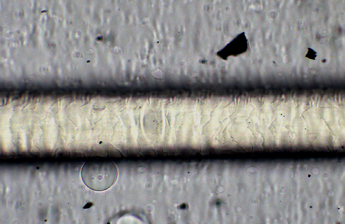

Na Vašem profilu se často věnujete čisticím šamponům a tomu, co s vlasy dokážou. Co jste ohledně nich vyzkoumala přes mikroskop
Já miluju šampon Un Do Goo, to je jeden z mých nejoblíbenější produktů a používám ho opravdu často. Zároveň je průhledný a díky tomu ho opakovaně používám do experimentů, protože ho mikroskop dokáže prosvítit. Ale jelikož je teď velký trend čištění vlasů, lidé mají tendenci vše přehánět, a to bohužel i s čistícími šampony. Už jsem potkala několik klientek, které to s používáním Un Do Goo přeháněly, používaly ho zbytečně často a vlasy (zejména v koncích) si kvůli tomu poškodily, jelikož má vysoké pH. Přes mikroskop je krásně vidět, že když zakápnete vlas Un Do Goo, kutikula se otevírá na maximum a když s vlasem pohnete, šupinky kutikuly se ulamují. Když si představím klientku, která s tím šamponem neumí zacházet opatrně, tak je jasné, že může dojít k poškození. Proto mě nadchla K18 se svým Detox šamponem, je tam taky krásně vidět, jak se vlas čistí a kutikula se otevírá, ale ne až tak extrémně a není proto náchylná k poškození. Pro klientky je tato varianta bezpečnější, než Un Do Goo, který doporučuju na použití v salonu. Detox Shampoo můžu s klidným srdcem doporučit na doma, aniž bych se bála, že si klientky můžou nesprávnou aplikací vlasy poškodit.
